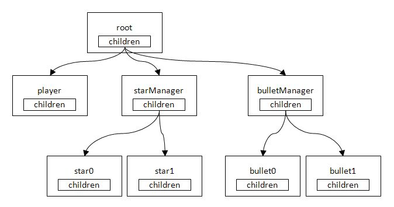

この文書ではガベージコレクションとインスタンスの解放について説明します。
Contents
前の章では自機から発射される弾を実装しました。 しかし、画面外に出て不要になった弾をそのまま放置していると、次から次に発射される弾でメモリがどんどん消費されていってしまいます。
そのためメモリの消費を抑えるために、不要になった弾のインスタンスを解放する必要があります。
C++ではnewで確保したメモリをdeleteを呼び出して解放します。 それに対して、C#ではC++のように明示的に解放するのではなく、そのインスタンスへの参照をプログラム上のどこからも参照されないようにし、ガベージコレクションに解放してもらうようにします。
C#でのインスタンスの解放は以下のイメージになります。
弾を発射したとき、アクターツリーは以下の状態になっています。
弾を発射したときのアクターツリー
画面外に出たbulltet0を解放したいとします。 この場合、親のbulletManager内のchildrenがbulltet0を参照している箇所を削除すればよいわけです。

bulltet0への参照を削除
children内の参照を削除すると、bullet0はどこからも参照されていない状態になります。 この状態で、ガベージコレクションが発動すると、bullet0のメモリが回収され、メモリ領域が再び利用可能になります。

ガベージコレクションの発動で、インスタンスを解放
では、不要になったインスタンスを解放する仕組みをアクターシステムに実装してみましょう。
まず、アクターの状態を表す列挙型変数を用意します。
sample/Tutorial/TutoLib/Actor.cs
public enum ActorStatus { Action, UpdateOnly, RenderOnly, Rest, NoUse, Dead, } public ActorStatus Status;行動中の場合、ActorStatus StatusにActorStatus.Actionを、不要になった場合はActorStatus.Deadを代入するようにします。
次にActorStatus.Deadの状態のアクターをList<Actor> childrenから削除するメソッドを実装します。
sample/Tutorial/TutoLib/Actor.cs
virtual public void CheckStatus() { if (this.status != this.StatusNextFrame) this.status = this.StatusNextFrame; if( this.Status == ActorStatus.Dead) { foreach(Actor actorChild in children) { actorChild.Status = ActorStatus.Dead; } } foreach(Actor actorChild in children) { actorChild.CheckStatus(); } children.RemoveAll(CheckDeadActor); } static bool CheckDeadActor(Actor actor) { //@j この条件で真になる要素を削除。 //@e Delete the elements to be proper with this condition. return actor.Status == ActorStatus.Dead; }RemoveAll()はリストから要素を削除するメソッドです。 上の例では、引数に渡したCheckDeadActor()メソッドで条件判定し、真の場合、リストからその要素を削除します。
次に、このCheckStatus()をGameFrameworkSample.csのUpdate()内で呼び出します。
sample/Tutorial/Sample06_01/GameFrameworkSample.cs
public override void Update() { base.Update(); ... Root.Update(); Root.CheckStatus();//<--here ... }こうしておくと、毎フレームごとにCheckStatus()がアクターツリーを巡回し、死亡フラグのたっているアクターをツリーから削除してくれます。
弾のクラスを見てみましょう。
sample/Tutorial/Sample06_01/Bullet.cs
public class Bullet : GameActor { static int idNum=0; float speed=8; public Bullet(GameFrameworkSample gs, string name, Texture2D textrue, Vector3 position) : base (gs, name) { Name = name + idNum.ToString(); this.sprite = new SimpleSprite( gs.Graphics, textrue); this.sprite.Center.X = 0.5f; this.sprite.Center.Y = 0.5f; idNum++; this.sprite.Position = position; } public override void Update() { sprite.Position.Y -= speed; if (sprite.Position.Y < 0 )//<--here { this.Status = Actor.ActorStatus.Dead; //<--here } base.Update(); } }<--hereの部分に注目してください。 毎フレーム座標を更新し、画面の外に出た場合(つまりsprite.Position.Y < 0が真のとき)、Statusに死亡フラグを立てます。 こうしておくと、CheckStatus()がこのアクターを自動的にリストから削除してくれます。
ゲームのプレイ中にガベージコレクションが発生すると、メモリ回収のために処理時間が割かれ、処理落ちしてしまうことがあります。
C#にはSystem.GC.Collect()という関数が用意されており、これを呼び出すと強制的にガベージコレクションを呼び出すことができます。
ステージとステージの合間にSystem.GC.Collect()を呼び出せば、ゲームプレイ中のガベージコレクションの発生を低減させることができます。
System.GC.Collect()の実装は次章で行います。
ところで今の状態では、インスタンスをリストから削除するところまでは確認できますが、ガベージコレクションが意図どおりインスタンスを解放してくれているかは確認できません。 これは少し不安なので、確認する方法を例示しておきます。
クラスにデストラクタを実装しておくと、ガベージコレクションがインスタンスを解放するとき、デストラクタを呼び出します。 そこでActorにデストラクタを実装して確認の処理を書いておけば、解放されたことが確認できます。
sample/Tutorial/TutoLib/Actor.cs
#if DEBUG /// <summary> /// デストラクタ。 /// </summary> ~Actor() { Console.WriteLine("~"+Name); } #endif上のように処理を書いておくと、ガベージコレクションが発動してインスタンスが解放されたとき、出力ウィンドウに ~bullet01のように文字列が出力されます。
ガベージコレクションが発生したのに文字列が出力されない場合、そのインスタンスがどこかから参照されていることが考えられますので、ソースコードを見直してみましょう。
なお、この処理は確認用のものなので、解放されていることが確認できたらコメントアウトしておきましょう。
※ このサンプルでは、インスタンスの解放を例示するためにインスタンスの生成と解放を繰り返しています。 しかし処理時間のことを考慮にいれると、生成と解放を繰り返すのではなく、不要になったインスタンスをそのまま保持しておき、インスタンスが必要になったら値を初期化して使いまわしたほうが効率はよくなります。
C#ではマネージドメモリ(C#のnewで確保したメモリ)以外のリソースのことをアンマネージドリソースと呼びます。
アンマネージドリソースを確保するクラスで、PSMアプリでよく利用されるものには次のものがあります。
- Texture2D
- Sound, SoundPlayer
- Bgm, BgmPlayer
- Image
アンマネージドリソースはマネージドメモリとは違い、プログラムからの参照がなくなっても、基本的にガベージコレクションによって回収されません。そのためこれらのクラスを利用した場合、明示的にリソースを解放する必要があります。
これらのクラスはIDisposableインタフェースを継承しており、リソースを解放するためのDisposeメソッドが実装されています。
IDisposableインタフェースを継承しているクラスは、不要になった時点でDisposeメソッドを呼び出し、確保したリソースを解放してください。
sample/Tutorial/Sample06_01/GameFrameworkSample.cs
public override void Terminate() { texturePlayer.Dispose(); textureStar.Dispose(); textureBullet.Dispose(); soundBullet.Dispose(); soundPlayerBullet.Dispose(); bgm.Dispose(); bgmPlayer.Dispose(); base.Terminate(); }上の例ではプログラム終了時にDispose()を呼び出し、確保したアンマネージドリソースの解放をおこなっています。
このサンプルではアンマネージドリソースの利用が少ないのでリソース不足になる恐れはほとんどありませんが、テクスチャの作成を頻繁におこなうプログラムでDispose()の解放を忘れると、容易にリソース不足になります。リソースが枯渇するとプログラムが異常終了するので、Dispose()の呼び出しを忘れないよう注意してください。
※ プログラムが終了すると、アンマネージドリソースは自動的に解放されます。